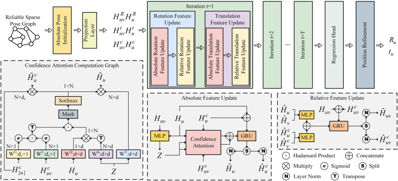
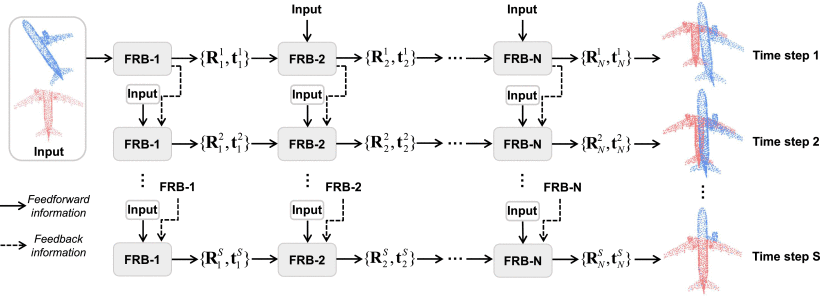

Publication
 |
Multiple Rotation Averaging with Constrained Reweighting Deep Matrix Factorization |
|  | Matching Distance and Geometric Distribution Aided Learning Multiview Point Cloud Registration |
 |
DBDNet:Partial-to-Partial Point Cloud Registration with Dual Branches Decoupling |
HECPG: Hyperbolic Embedding and Confident Patch-Guided Network for Point Cloud Matching |
 |
Iterative Feedback Network for Unsupervised Point Cloud Registration |
|  | Cross-Modal Information-Guided Network Using Contrastive Learning for Point Cloud Registration |
Lightweight Human Pose Estimation Using Loss Weighted by Target Heatmap |
Preprint
3D-JEPA: A Joint Embedding Predictive Architecture for 3D Self-Supervised Representation Learning
Naiwen Hu, Haozhe Cheng, Yifan Xie, Shiqi Li, Jihua Zhu
arXiv preprint arXiv:2409.15803.
Incremental Multiview Point Cloud Registration with Two-stage Candidate Retrieval
Shiqi Li, Jihua Zhu, Yifan Xie, Mingchen Zhu
arXiv preprint arXiv:2407.07525.